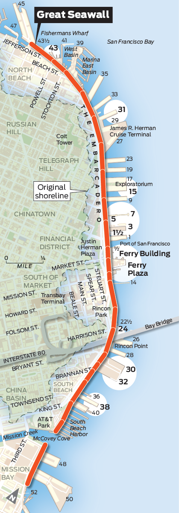

<div class="embarcadero-map-interactive" id="embarcadero-interactive">
  <div class="hed">8 spots on Embarcadero reveal changes past, challenges ahead</div>
  <div class="chatter">These eight stops along the Embarcadero give a sense of how it has changed in recent years, the mix of current uses and the dilemmas that lie ahead.</div>

  <div id="sticky-map-top"></div>
  <div class="scroll-image">
    </img>
  </div>
  <div id="sticky-map-bottom"></div>

  <div class="pier-info pier1"></div>
  <div class="pier-info pier2"></div>
  <div class="pier-info pier3"></div>
  <div class="pier-info pier4"></div>
  <div class="pier-info pier5"></div>
  <div class="pier-info pier6"></div>
  <div class="pier-info pier7"></div>
  <div class="pier-info pier8"></div>

  <div class="interactive-credit">
    <div class="entry">Emma O'Neill  &bull; <a href="mailto:eoneill@sfchronicle.com">eoneill@sfchronicle.com</a>   &bull; <a href = "https://twitter.com/emmaruthoneill" target="_blank">@emmaruthoneill</a></div>
  </div>

</div>
